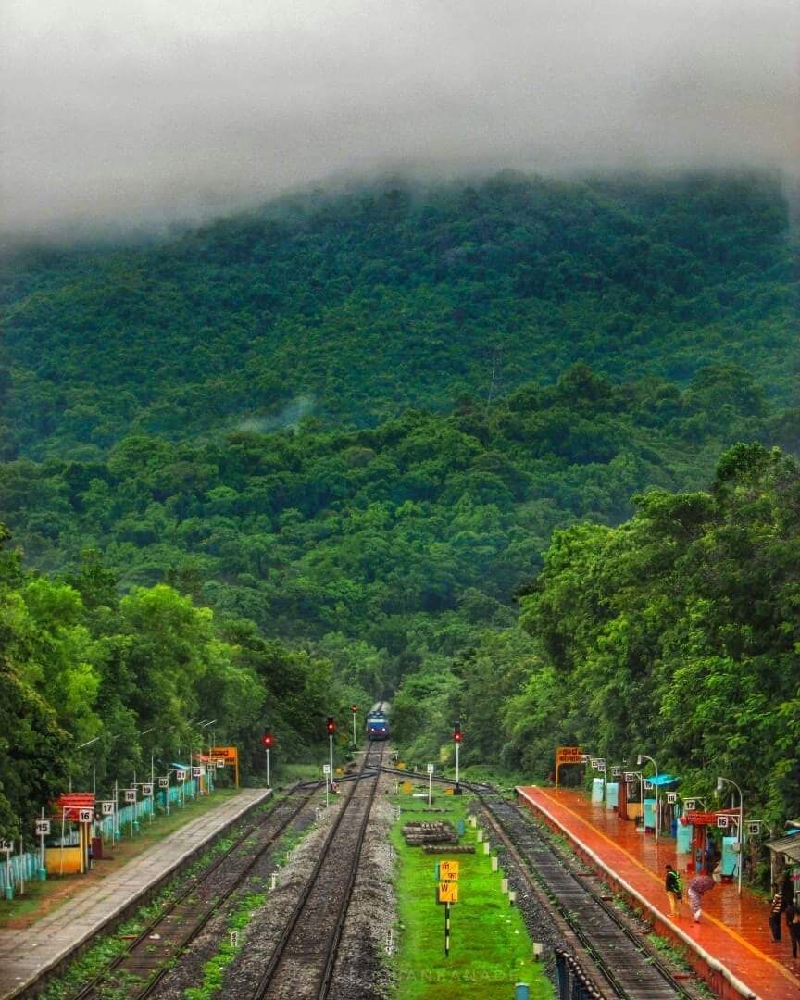
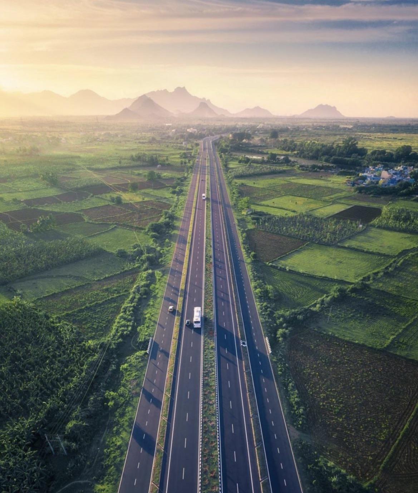

Bengaluru to Murudeshwara (via Dakshina Kannada) - NH 75 + 66
Embark on a scenic drive from Bengaluru to Murudeshwara, passing through Dakshina Kannada. A journey filled with coastal beauty and historical landmarks.

Bengaluru to Coorg - NH 275
Take the highway to Coorg, known for its coffee plantations, hill stations, and tranquil beauty. A perfect weekend getaway from Bengaluru!

Bengaluru to North Karnataka - NH 48
Venture towards North Karnataka through NH 48, discovering ancient temples, historic sites, and lush landscapes on your way to places like Badami and Bagalkot.